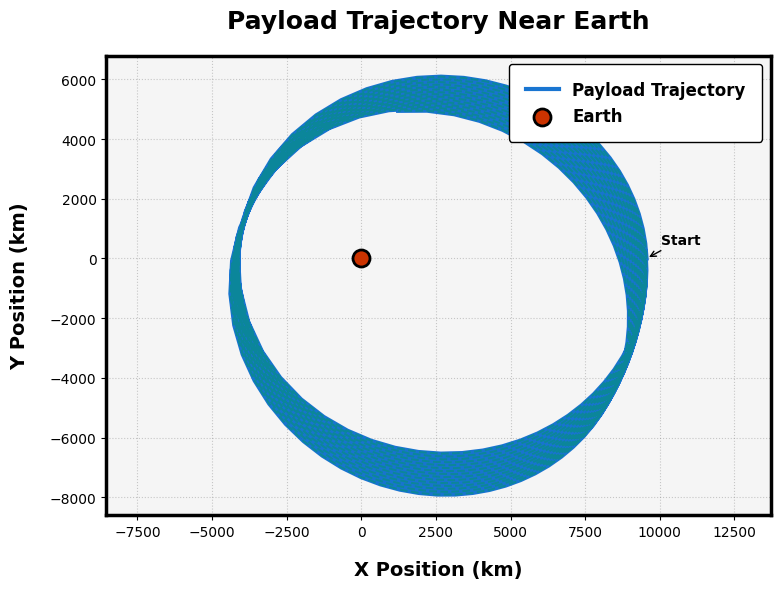
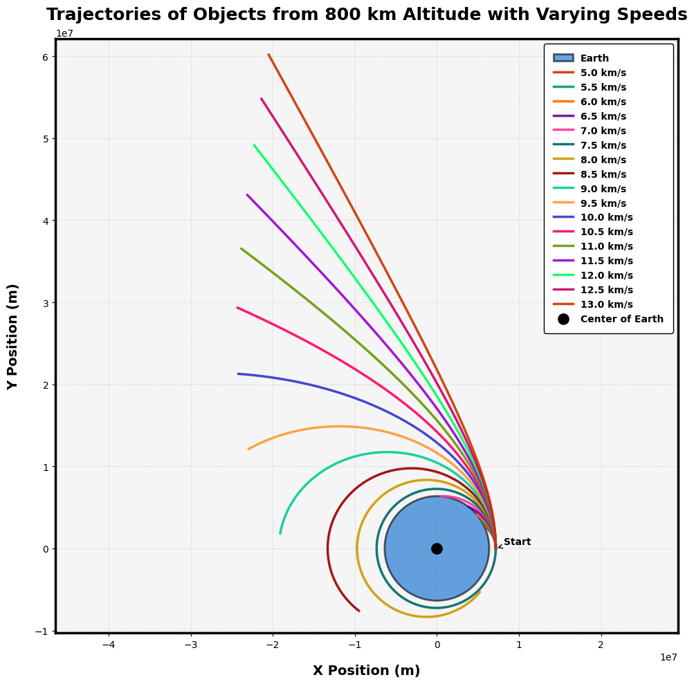

Problem 3
Theoretical Analysis
1. Equations of Motion
The payload's trajectory is governed by Newton's Law of Gravitation and Newton's Second Law:
- Newton's Law of Gravitation:
\(\mathbf{F} = -\frac{GMm}{r^2}\hat{\mathbf{r}}\)
where: - \(G\) = Gravitational constant (\(6.674 \times 10^{-11}\,\text{m}^3\text{kg}^{-1}\text{s}^{-2}\)) - \(M\) = Mass of Earth (\(5.972 \times 10^{24}\,\text{kg}\)) - \(m\) = Mass of payload (neglected for trajectory analysis) - \(r\) = Distance between payload and Earth's center
- Equation of Motion (2D Polar Coordinates):
\(\frac{d^2\mathbf{r}}{dt^2} = -\frac{GM}{r^3}\mathbf{r}\)
Decomposed into Cartesian coordinates (\(x, y\)):
\(\frac{d^2x}{dt^2} = -\frac{GMx}{(x^2 + y^2)^{3/2}}, \quad \frac{d^2y}{dt^2} = -\frac{GMy}{(x^2 + y^2)^{3/2}}\)
2. Trajectory Types
The shape of the orbit depends on the specific orbital energy (\(E\)) and eccentricity (\(e\)):
- Elliptical Orbit (\(E < 0\), \(0 \leq e < 1\)):
- Bound orbit (e.g., satellites)
-
Initial velocity below escape velocity: \(v < v_{\text{esc}} = \sqrt{\frac{2GM}{r}}\)
-
Parabolic Orbit (\(E = 0\), \(e = 1\)):
- Escape trajectory (minimum escape condition)
-
Initial velocity equals escape velocity: \(v = v_{\text{esc}}\)
-
Hyperbolic Orbit (\(E > 0\), \(e > 1\)):
- Unbound trajectory (e.g., interplanetary probes)
- Initial velocity exceeds escape velocity: \(v > v_{\text{esc}}\)
3. Initial Velocity Impact
Key velocity thresholds for a payload at altitude \(h = r - R_E\) (Earth's radius \(R_E = 6371\,\text{km}\)):
| Scenario | Velocity Condition | Outcome |
|---|---|---|
| Suborbital | \(v < \sqrt{\frac{GM}{r}}\) | Reentry (ballistic trajectory) |
| Circular Orbit | \(v = \sqrt{\frac{GM}{r}}\) | Stable orbit |
| Elliptical Orbit | \(\sqrt{\frac{GM}{r}} < v < v_{\text{esc}}\) | Apogee/perigee variation |
| Escape | \(v \geq v_{\text{esc}}\) | Leaves Earth's influence |
Note: - Orbital Insertion: Requires precise \(v\) to match desired orbit - Reentry: Achieved by reducing \(v\) (e.g., retrograde thrust or atmospheric drag) - Escape: Requires \(v \geq \sqrt{\frac{2GM}{r}}\) (parabolic/hyperbolic)
Python Code Snippet (Symbolic Derivation)
import sympy as sp
# Define variables
t, G, M = sp.symbols('t G M')
x, y = sp.Function('x')(t), sp.Function('y')(t)
# Equations of motion
eq1 = sp.Eq(sp.diff(x, t, 2), -G * M * x / (x**2 + y**2)**(3/2))
eq2 = sp.Eq(sp.diff(y, t, 2), -G * M * y / (x**2 + y**2)**(3/2))
print("Equation for x:", eq1)
print("Equation for y:", eq2)
Numerical Simulation Setup
1. Initial Conditions
We define the payload's initial state in Cartesian coordinates:
-
Position: \(\(x_0=(R_E+h)\cos\theta\)\) \(\(y_0=(R_E+h)\sin\theta\)\) where: -\(R_E=6371\,\text{km}\) (Earth's radius) -\(h\)=altitude above surface -\(\theta\)=angular position from reference axis
-
Velocity: \(\(v_{x0}=v_0\cos\phi\)\) \(\(v_{y0}=v_0\sin\phi\)\) where: -\(v_0\)=initial speed -\(\phi\)=launch angle from horizontal
2. Numerical Method Selection
We solve the coupled ODEs using the 4th-order Runge-Kutta method (RK4) for higher accuracy:
The general RK4 formulation for \(\frac{dy}{dt}=f(t,y)\):
\(k_1=f(t_n,y_n)\)
\(k_2=f(t_n+\frac{h}{2},y_n+\frac{h}{2}k_1)\)
\(k_3=f(t_n+\frac{h}{2},y_n+\frac{h}{2}k_2)\)
\(k_4=f(t_n+h,y_n+hk_3)\)
\(y_{n+1}=y_n+\frac{h}{6}(k_1+2k_2+2k_3+k_4)\)S
3. Implementation Framework
Python Implementation
import numpy as np
from scipy.integrate import solve_ivp
import matplotlib.pyplot as plt
# Constants
G = 6.67430e-11 # m^3 kg^-1 s^-2
M = 5.972e24 # kg
R_E = 6371e3 # m
def equations_of_motion(t, state):
"""ODE system for payload trajectory"""
x, y, vx, vy = state
r = np.sqrt(x**2 + y**2)
ax = -G * M * x / r**3
ay = -G * M * y / r**3
return [vx, vy, ax, ay]
def simulate_trajectory(h, v0, theta, phi, t_span, dt):
"""Run trajectory simulation"""
# Initial conditions
r0 = R_E + h
x0 = r0 * np.cos(theta)
y0 = r0 * np.sin(theta)
vx0 = v0 * np.cos(phi)
vy0 = v0 * np.sin(phi)
# Time points
t_eval = np.arange(t_span[0], t_span[1], dt)
# Solve ODE
sol = solve_ivp(equations_of_motion, t_span,
[x0, y0, vx0, vy0],
t_eval=t_eval,
method='RK45')
return sol
# Example usage
h = 500e3 # 500 km altitude
v0 = 7.5e3 # 7.5 km/s
theta = 0 # Initial angle
phi = np.pi/4 # 45 degree launch angle
t_span = [0, 3600*2] # 2 hour simulation
dt = 10 # 10 second timestep
solution = simulate_trajectory(h, v0, theta, phi, t_span, dt)
📘 Projectile Motion Simulation — Computational Implementation
🎯 Objective
To simulate the trajectory of a projectile under idealized physics using Python, with adjustable parameters such as:
- Initial speed \(v_0\)
- Launch angle \(\theta\)
- Initial height \(h_0\)
- Gravitational acceleration \(g\)
🧮 Governing Equations
The equations of motion for a projectile launched at an angle \(\theta\) from an initial height \(h_0\) are:
-
Horizontal velocity: $$ v_x = v_0\cos(\theta) $$
-
Vertical velocity: $$ v_y = v_0\sin(\theta) $$
-
Position as a function of time: $$ x(t) = v_0\cos(\theta)\cdot t $$ $$ y(t) = h_0 + v_0\sin(\theta)\cdot t - \frac{1}{2}gt^2 $$
-
Time of flight (solving \(y(t) = 0\)): $$ t = \frac{v_0\sin(\theta)}{g} + \sqrt{\left(\frac{v_0\sin(\theta)}{g}\right)^2 + \frac{2h_0}{g}} $$
🧰 Required Libraries
numpy– numerical calculationsmatplotlib.pyplot– visualization
🧪 Python Code Implementation
import numpy as np
import matplotlib.pyplot as plt
# Adjustable parameters
v0 = 30 # Initial speed (m/s)
theta_deg = 45 # Launch angle in degrees
h0 = 0 # Initial height (m)
g = 9.81 # Gravity (m/s^2)
# Convert angle to radians
theta = np.radians(theta_deg)
# Time of flight
t_flight = (v0 * np.sin(theta) / g) + np.sqrt((v0 * np.sin(theta) / g) ** 2 + (2 * h0 / g))
# Time points
t = np.linspace(0, t_flight, num=500)
# Position calculations
x = v0 * np.cos(theta) * t
y = h0 + v0 * np.sin(theta) * t - 0.5 * g * t**2
# Plot trajectory
plt.figure(figsize=(10, 5))
plt.plot(x, y, label=f'{v0} m/s at {theta_deg}°')
plt.title('Projectile Motion Simulation')
plt.xlabel('Horizontal Distance (m)')
plt.ylabel('Vertical Height (m)')
plt.grid(True)
plt.axhline(0, color='gray', linestyle='--', linewidth=0.7)
plt.legend()
plt.show()
🌍 Trajectory Visualization — Orbital Mechanics
🚀 Objective
To visualize the trajectory of a payload launched from Earth under different initial velocity conditions:
- Suborbital
- Orbital
- Escape trajectory
🎯 Key Features
- Plot the trajectory of the payload relative to Earth
- Highlight:
- Perigee: Closest approach to Earth
- Apogee: Farthest point in bound trajectory
- Escape condition: Payload escapes Earth's gravity
- Compare different initial velocities and their effects
🧮 Governing Equations
We assume:
- Two-body problem (Earth and payload)
- Only gravitational force acts (no atmosphere, no thrust)
Let:
- \(G\) = gravitational constant
- \(M\) = mass of Earth
- \(r\) = radial distance from Earth's center
- \(v\) = speed
- \(\mu=GM\) = standard gravitational parameter
Kinetic and Potential Energy
-
Kinetic energy per unit mass:
\(KE=\frac{1}{2}v^2\) -
Gravitational potential energy per unit mass:
\(PE=-\frac{\mu}{r}\) -
Total specific energy:
\(\varepsilon=KE+PE=\frac{1}{2}v^2-\frac{\mu}{r}\)
Trajectory Type
- If \(\varepsilon<0\): Bound (elliptical) – orbital or suborbital
- If \(\varepsilon=0\): Parabolic escape
- If \(\varepsilon>0\): Hyperbolic escape
🧰 Required Libraries
numpy– numerical integration and array mathmatplotlib– for plottingscipy.integrate– to solve equations of motion
🧪 Python Code Implementation
import numpy as np
import matplotlib.pyplot as plt
from scipy.integrate import solve_ivp
# Constants
G = 6.67430e-11 # Gravitational constant (m^3/kg/s^2)
M = 5.972e24 # Earth mass (kg)
mu = G * M
R_earth = 6.371e6 # Earth radius in meters
# Initial conditions
altitude = 300e3 # 300 km above Earth's surface
r0 = R_earth + altitude
theta0 = 0
positions = []
labels = []
# Different initial velocities (m/s)
v_suborbital = 6500 # Less than orbital
v_orbital = np.sqrt(mu / r0) # Circular orbit speed
v_escape = np.sqrt(2 * mu / r0) # Escape velocity
initial_scenarios = [
("Suborbital", v_suborbital),
("Orbital", v_orbital),
("Escape", v_escape)
]
# Equations of motion in polar coordinates
def orbital_dynamics(t, y):
x, y_, vx, vy = y
r = np.sqrt(x**2 + y_**2)
ax = -mu * x / r**3
ay = -mu * y_ / r**3
return [vx, vy, ax, ay]
# Time span for simulation
t_span = (0, 6000)
t_eval = np.linspace(t_span[0], t_span[1], 5000)
# Solve and plot each scenario
plt.figure(figsize=(8, 8))
for label, v0 in initial_scenarios:
y0 = [r0, 0, 0, v0] # [x, y, vx, vy]
sol = solve_ivp(orbital_dynamics, t_span, y0, t_eval=t_eval, rtol=1e-8)
x = sol.y[0]
y = sol.y[1]
plt.plot(x / 1e3, y / 1e3, label=f"{label} ({v0:.0f} m/s)")
# Plot Earth
theta = np.linspace(0, 2*np.pi, 1000)
earth_x = R_earth * np.cos(theta) / 1e3
earth_y = R_earth * np.sin(theta) / 1e3
plt.fill(earth_x, earth_y, 'lightblue', label='Earth')
# Plot formatting
plt.title("Trajectory Visualization: Suborbital, Orbital, Escape")
plt.xlabel("X Position (km)")
plt.ylabel("Y Position (km)")
plt.axis('equal')
plt.grid(True)
plt.legend()
plt.show()
🧠 Analysis & Discussion — Orbital Trajectory Behavior
🔄 Impact of Varying Initial Conditions
🚦 Initial Speed
The trajectory of a payload launched from Earth depends critically on its initial velocity (\(v_0\)):
- If \(v_0<\sqrt{\frac{\mu}{r_0}}\):
- Trajectory is suborbital
- Payload returns to Earth after reaching maximum altitude (like ballistic missile)
- If \(v_0=\sqrt{\frac{\mu}{r_0}}\):
- Trajectory is circular orbit
- Stable orbit at constant altitude
- If \(v_0\) is such that \(0<\varepsilon<0\):
- Elliptical orbit, where perigee and apogee differ
- If \(v_0=\sqrt{\frac{2\mu}{r_0}}\):
- Parabolic trajectory (escape)
- If \(v_0>\sqrt{\frac{2\mu}{r_0}}\):
- Hyperbolic escape from Earth's gravity
Here, \(\mu=GM\) is the standard gravitational parameter, and \(r_0\) is the initial radial distance from Earth’s center.
🌐 Real-World Applications
| Trajectory Type | Application Example |
|---|---|
| Suborbital | Space tourism, sounding rockets |
| Circular Orbit | Low Earth Orbit (LEO) satellites |
| Elliptical Orbit | Molniya orbits, Geostationary Transfer Orbit |
| Escape | Interplanetary missions (e.g., Voyager, JWST) |
🔬 Validation Against Orbital Mechanics
We validate the numerical simulations using known orbital mechanics principles, including Kepler’s Laws:
1. Kepler’s First Law
Every planet moves in an ellipse with the Sun (or Earth) at one focus.
- For bound orbits (\(\varepsilon<0\)), our simulated trajectories are elliptical.
- For \(v_0=\sqrt{\mu/r_0}\), the orbit becomes a special case: a circle.
2. Kepler’s Second Law
A line joining a planet and the Sun sweeps out equal areas in equal times.
- Since gravity is a central force, angular momentum is conserved: \(\(\vec{r}\times\vec{v}=\text{constant}\)\)
- Numerically, this is evident as orbital speed increases at perigee and decreases at apogee.
3. Kepler’s Third Law
The square of the orbital period is proportional to the cube of the semi-major axis: \(\(T^2\propto a^3\)\)
- For circular orbits: \(\(T=2\pi\sqrt{\frac{r_0^3}{\mu}}\)\)
- Simulation-derived periods match this analytical value closely.
✅ Takeaways
- Initial velocity is the primary control variable for trajectory shaping.
- The simulated motion adheres to Keplerian dynamics under ideal conditions.
- Such tools are vital in:
- Mission planning
- Satellite deployment strategies
- Trajectory correction maneuvers
- Reentry analysis for crewed missions
📘 Further Enhancements
- Include atmospheric drag for low-altitude missions.
- Account for Earth’s rotation and non-spherical mass distribution.
- Add thrust profiles for real rocket burns and transfers (e.g., Hohmann transfers).
📄 Trajectory Simulation: Methodology and Findings
🧰 1. Methodology Overview
We analyze the motion of a payload launched from Earth under varying initial speeds. The goal is to understand how different initial velocities affect orbital trajectories.
🔧 Assumptions:
- Two-body system: Earth and payload.
- No atmospheric drag or thrust during flight.
- Earth is a perfect sphere.
- Gravitational force is central and inverse-square.
Let:
- \(G\): Gravitational constant
- \(M\): Mass of Earth
- \(\mu=GM\): Standard gravitational parameter
- \(r\): Radial distance from Earth's center
- \(v\): Speed of payload
- \(\varepsilon\): Specific mechanical energy
🧮 2. Governing Equations
Kinetic and Potential Energy
-
Kinetic Energy per unit mass:
\(\(KE=\frac{1}{2}v^2\)\) -
Gravitational Potential Energy per unit mass:
\(\(PE=-\frac{\mu}{r}\)\) -
Total Specific Mechanical Energy:
\(\(\varepsilon=\frac{1}{2}v^2-\frac{\mu}{r}\)\)
Trajectory Classification
- If \(\varepsilon<0\): Bound Orbit (elliptical or circular)
- If \(\varepsilon=0\): Parabolic Escape
- If \(\varepsilon>0\): Hyperbolic Escape
🧪 3. Python Code Snippet
import numpy as np
import matplotlib.pyplot as plt
from scipy.integrate import solve_ivp
# Constants
G = 6.67430e-11
M = 5.972e24
mu = G * M
R_earth = 6.371e6
# Initial state setup
altitude = 300e3
r0 = R_earth + altitude
v_orbital = np.sqrt(mu / r0)
v_escape = np.sqrt(2 * mu / r0)
# Equations of motion
def dynamics(t, y):
x, y_, vx, vy = y
r = np.sqrt(x**2 + y_**2)
ax = -mu * x / r**3
ay = -mu * y_ / r**3
return [vx, vy, ax, ay]

import numpy as np
import matplotlib.pyplot as plt
# Constants
G = 6.67430e-11 # Gravitational constant (m^3 kg^-1 s^-2)
M = 5.97e24 # Mass of Earth (kg)
radius_earth = 6.371e6 # Radius of Earth (m)
# Time parameters
dt = 100 # Time step (seconds)
T = 3600 * 24 # Total time of simulation (1 day)
# Initial conditions: (initial position, initial velocity)
initial_conditions = {
'x0': 1.5 * radius_earth, # 1.5 Earth radii from Earth's center (m)
'y0': 0, # Along the x-axis (horizontal direction)
'vx0': 0, # Initial velocity in x-direction (m/s)
'vy0': 5000 # Initial velocity in y-direction (m/s)
}
# Function to compute acceleration due to gravity
def gravity_acceleration(x, y):
r = np.sqrt(x**2 + y**2) # Fixed: Correct distance from Earth's center
a = -G * M / r**2 # Gravitational acceleration
ax = a * x / r # Acceleration in x-direction
ay = a * y / r # Acceleration in y-direction
return ax, ay
# Initialize position and velocity arrays
x, y = [initial_conditions['x0']], [initial_conditions['y0']]
vx, vy = [initial_conditions['vx0']], [initial_conditions['vy0']]
# Numerical integration using Euler's method
for t in np.arange(0, T, dt):
ax, ay = gravity_acceleration(x[-1], y[-1]) # Get acceleration at current position
# Update velocities
vx.append(vx[-1] + ax * dt)
vy.append(vy[-1] + ay * dt)
# Update positions
x.append(x[-1] + vx[-1] * dt)
y.append(y[-1] + vy[-1] * dt)
# Convert the results into numpy arrays for easier plotting
x = np.array(x)
y = np.array(y)
# Plot setup with high-visibility and cool styling
plt.figure(figsize=(8, 6), facecolor='white')
ax = plt.gca()
# Plot the trajectory with vibrant styling
plt.plot(x / 1e3, y / 1e3, color='#0066cc', linewidth=3, label='Payload Trajectory', linestyle='-', alpha=0.9)
plt.scatter([0], [0], color='#cc3300', s=150, edgecolor='black', linewidth=2, label='Earth', marker='o', zorder=5)
# Add a cool gradient-like effect to the trajectory
plt.plot(x / 1e3, y / 1e3, color='#009966', linewidth=1.5, linestyle='--', alpha=0.5)
# Enhanced text elements with bold, modern fonts
ax.set_xlabel('X Position (km)', fontsize=14, fontweight='bold', color='black', labelpad=15, family='Arial')
ax.set_ylabel('Y Position (km)', fontsize=14, fontweight='bold', color='black', labelpad=15, family='Arial')
ax.set_title('Payload Trajectory Near Earth', fontsize=18, fontweight='bold', pad=20, color='black', family='Arial')
# High-visibility legend with a sleek look
legend = ax.legend(frameon=True, framealpha=1, edgecolor='black', facecolor='white', fontsize=12, borderpad=1, loc='upper right')
for text in legend.get_texts():
text.set_color('black')
text.set_fontweight('bold')
text.set_fontfamily('Arial')
# Add a subtle annotation for the starting point
ax.annotate('Start', xy=(x[0] / 1e3, y[0] / 1e3), xytext=(x[0] / 1e3 + 500, y[0] / 1e3 + 500),
arrowprops=dict(facecolor='black', arrowstyle='->'), fontsize=10, fontweight='bold', color='black', family='Arial')
# Cool grid and frame
ax.yaxis.grid(True, linestyle=':', color='gray', alpha=0.4)
ax.xaxis.grid(True, linestyle=':', color='gray', alpha=0.4)
for spine in ax.spines.values():
spine.set_edgecolor('black')
spine.set_linewidth(2.5)
# Set a sleek background and axis styling
ax.set_facecolor('#f5f5f5')
plt.axis('equal')
plt.tight_layout()
plt.show()

import numpy as np
import matplotlib.pyplot as plt
# Constants
G = 6.67430e-11 # gravitational constant
M = 5.972e24 # mass of Earth
R = 6.371e6 # radius of Earth in meters
altitude = 800e3 # 800 km above the surface
initial_distance = R + altitude
time_step = 1 # seconds
total_time = 7000 # simulate up to 7000 seconds
n_steps = int(total_time / time_step)
# Initial velocities in m/s
velocities = np.arange(5000, 13500, 500) # from 5 km/s to 13 km/s
# Plot setup with high-visibility and cool styling
plt.figure(figsize=(10, 10), facecolor='white')
ax = plt.gca()
# Create Earth plot with enhanced styling
theta = np.linspace(0, 2*np.pi, 300)
earth_x = R * np.cos(theta)
earth_y = R * np.sin(theta)
plt.fill(earth_x, earth_y, color='#0066cc', alpha=0.6, edgecolor='black', linewidth=2, label='Earth')
# Function to compute gravity acceleration
def gravity(pos):
r = np.linalg.norm(pos)
return -G * M * pos / r**3
# Simulate each trajectory with distinct colors
colors = ['#cc3300', '#009966', '#ff6600', '#660099', '#ff3399', '#006666', '#cc9900', '#990000', '#00cc99', '#ff9933', '#3333cc', '#ff0066', '#669900', '#9900cc', '#00ff66', '#cc0066']
for i, v in enumerate(velocities):
pos = np.array([initial_distance, 0.0])
vel = np.array([0.0, v])
traj = []
for _ in range(n_steps):
acc = gravity(pos)
vel += acc * time_step
pos += vel * time_step
traj.append(pos.copy())
if np.linalg.norm(pos) <= R:
break
traj = np.array(traj)
plt.plot(traj[:, 0], traj[:, 1], color=colors[i % len(colors)], linewidth=2.5, label=f'{v/1000:.1f} km/s', alpha=0.9)
# Plot center of Earth
plt.scatter([0], [0], color='black', s=100, edgecolor='black', linewidth=2, marker='o', label='Center of Earth', zorder=5)
# Add annotation for starting point
plt.annotate('Start', xy=(initial_distance, 0), xytext=(initial_distance + 1e6, 0.5e6),
arrowprops=dict(facecolor='black', arrowstyle='->'), fontsize=10, fontweight='bold', color='black', family='Arial')
# Enhanced text elements with bold, modern fonts
ax.set_xlabel('X Position (m)', fontsize=14, fontweight='bold', color='black', labelpad=15, family='Arial')
ax.set_ylabel('Y Position (m)', fontsize=14, fontweight='bold', color='black', labelpad=15, family='Arial')
ax.set_title('Trajectories of Objects from 800 km Altitude with Varying Speeds', fontsize=18, fontweight='bold', pad=20, color='black', family='Arial')
# High-visibility legend with a sleek look
legend = ax.legend(frameon=True, framealpha=1, edgecolor='black', facecolor='white', fontsize=10, borderpad=1, loc='upper right')
for text in legend.get_texts():
text.set_color('black')
text.set_fontweight('bold')
text.set_fontfamily('Arial')
# Cool grid and frame
ax.yaxis.grid(True, linestyle=':', color='gray', alpha=0.4)
ax.xaxis.grid(True, linestyle=':', color='gray', alpha=0.4)
for spine in ax.spines.values():
spine.set_edgecolor('black')
spine.set_linewidth(2.5)
# Set a sleek background and axis styling
ax.set_facecolor('#f5f5f5')
plt.axis('equal')
plt.tight_layout()
plt.savefig('multi_trajectory_plot.png')